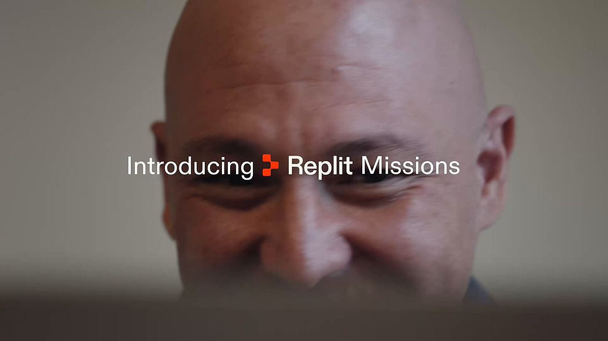
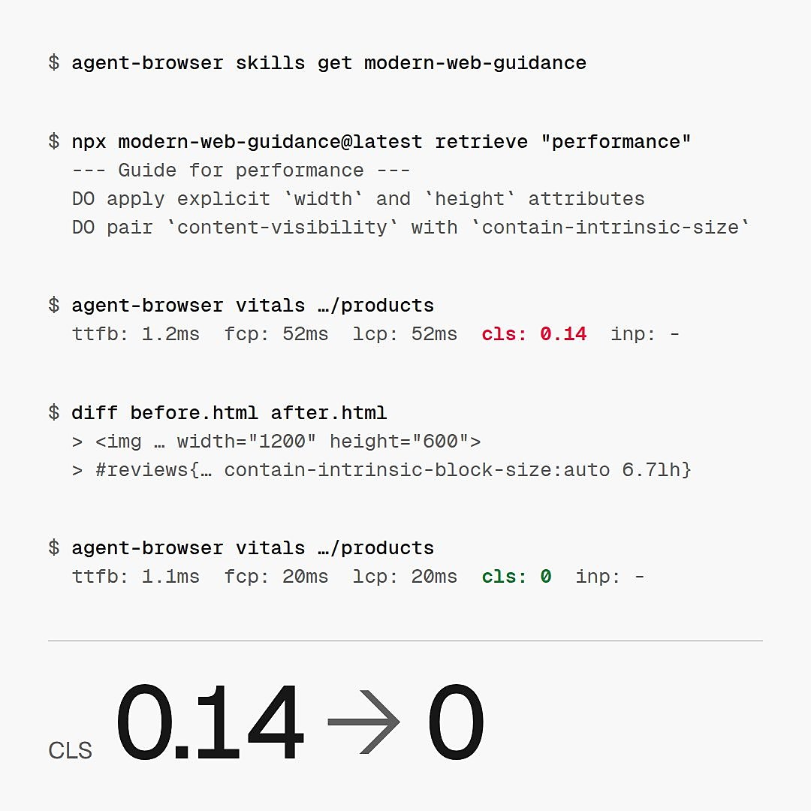

AI 日报 · 11月19日
模型效率、任务执行与代理协作同日推进
OpenAI 发布 GPT-6.2 Astra 与 Sol，Google 将 Gemini 带到低内存 Android 设备；Builder 继续讨论长期身份和并行代理协作。
模型效率
任务执行
代理协作
开源工具
5
Builder 动态
3
上榜仓库
2
官方更新
1
深度对话
今日要点
深度对话
Black Forest Labs 谈视觉智能
Latent Space 采访 Andreas Blattmann 与 Dustin Podell，回顾潜空间扩散、图像编辑模型的演进，并讨论视觉模型与机器人方向的连接。以下观点来自节目对话。
从图像生成走向可编辑工作流
嘉宾介绍从 Stable Diffusion、SDXL 到 Flux 系列的经历，强调图像编辑在日常创作工具中的作用。
视觉模型的下一步
节目讨论视频、世界模型与机器人方向的联系；相关前景是受访者判断，尚非已实现的产品能力。
Builder 动态
任务执行与代理团队的实践讨论
Josh Woodward｜Gemini 任务面向更多用户
Josh Woodward 称 Gemini 的任务执行能力开始在六个国家免费开放，并由 Gemini 4 Hydrogen 支持；具体范围以 Google 官方公告为准。
Amjad Masad｜并行代理群探索软件性能
Replit CEO Amjad Masad 提出通过多个代理并行探索、相互质疑与协作来优化软件性能；这是其技术观点。

Thibault Sottiaux｜更快的模型使用体验
OpenAI 的 Thibault Sottiaux 建议 Pro 订阅用户体验 6.2 Sol ultrafast，并表示团队希望逐步扩大高速体验的覆盖。
Guillermo Rauch｜代理浏览器性能指标
Vercel CEO Guillermo Rauch 关注 agent-browser vitals，认为面向代理的网页性能指标能推动软件自我优化；这是其个人评价。

GitHub Trending
插件、命令行接口与设计技能
11 月 19 日 GitHub Trending 快照；星标及 Fork 数取自同日仓库页面。
今日思考
把效率收益落到可检查的任务
模型发布强调效率，产品更新扩大可用设备，Builder 则关注代理如何协作。实际采用时，可把速度、成本、任务完成质量和人工复核一起记录。
今天可做
挑一个重复任务，让新模型与现有流程各执行一次，记录耗时、费用、完成度和人工修改量。
参考来源
OpenAI：GPT-6.2 Astra 与 Sol
Google：Gemini 支持低内存 Android 设备
Latent Space：Black Forest Labs 专访
GitHub Trending
Josh Woodward｜Gemini 任务面向更多用户
Swyx｜Devin 长期身份与团队协作
Amjad Masad｜并行代理群探索软件性能
Thibault Sottiaux｜更快的模型使用体验
Guillermo Rauch｜代理浏览器性能指标
cursor/plugins
HKUDS/CLI-Anything
google-labs-code/stitch-skills